Hướng dẫn cách cách lập báo cáo tài chính theo thông tư 200 trên phần mềm Misa
Đối với những doanh nghiệp áp dụng chế độ kế toán theo Thông tư 200/2014/TT-BTC thì bộ báo cáo tài chính gồm có:
- Mẫu số B01 – DN: Bảng cân đối kế toán
- Mẫu số B02 – DN: Báo cáo kết quả hoạt động kinh doanh
- Mẫu số B03 – DN: Báo cáo lưu chuyển tiền tệ
- Mẫu số B09 – DN: Bản thuyết minh Báo cáo tài chính
Để thực hiện lập báo cáo tài chính theo thông tư 200/2014/TT-BTC trên phần mềm Misa thì cách bạn thực hiện lần lượt các bước như sau:
A - Lập báo cáo tài chính – theo Thông tư 200
1. Vào phân hệ "Tổng hợp" => chọn tab "Lập BCTC" => ấn "Thêm\Báo cáo tài chính".
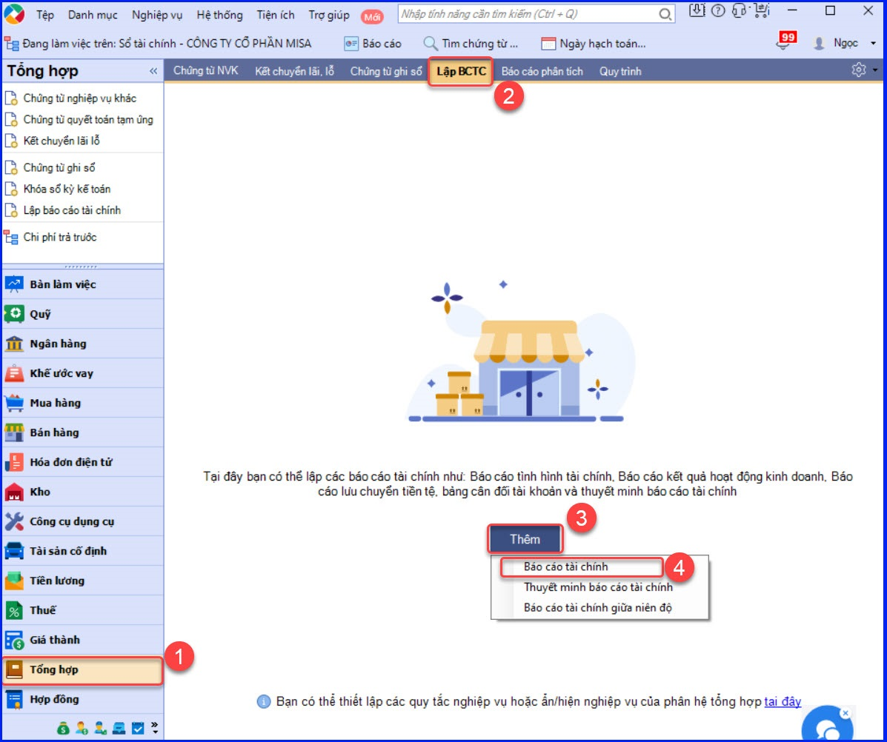
2. Chọn "Kỳ báo cáo": theo tháng, quý hoặc năm hoặc 6 tháng đầu năm, 6 tháng cuối năm, hoặc theo khoảng thời gian bất kỳ.
Lưu ý: Với dữ liệu đa chi nhánh, khi lập BCTC của Tổng công ty, nếu tích chọn Bù trừ công nợ của cùng đối tượng giữa các chi nhánh. Phần mềm sẽ thực hiện bù trừ công nợ của cùng 1 đối tượng (với Tài khoản chi tiết theo đối tượng) giữa các chi nhánh phụ thuộc.
3. Chọn báo cáo tài chính cần lập:
- Phần mềm mặc định tích chọn B01-DN Bảng cân đối kế toán và không cho phép bỏ tích.
- Các báo cáo còn lại kế toán sẽ lựa chọn lập theo nhu cầu thực tế của đơn vị.
- Tùy theo đặc điểm và nhu cầu quản lý của đơn vị, kế toán chỉ được chọn lập 1 trong 2 báo cáo: B03-DN Báo cáo lưu chuyển tiền tệ (PP trực tiếp) hoặc B03-DN-GT Báo cáo lưu chuyển tiền tệ (PP gián tiếp)
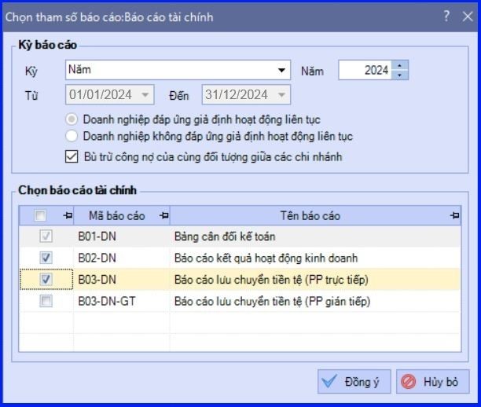
4. Các bạn ấn "Đồng ý" => Phần mềm sẽ tự động lấy dữ liệu lên các báo cáo đã chọn:
- Tab B01-DN là Bảng cân đối kế toán.
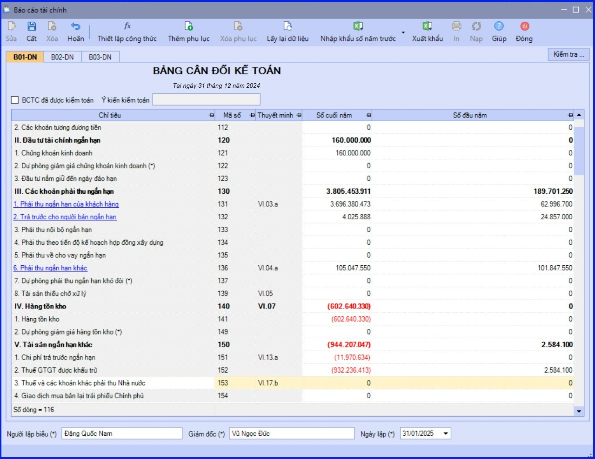
Lưu ý: Trường hợp Bảng cân đối kế toán không cân, kế toán có thể tìm nguyên ngân bằng cách nhấn chọn chức năng "Kiểm tra" trên tab B01-DN.
- Tab B02-DN là Báo cáo kết quả hoạt động kinh doanh.
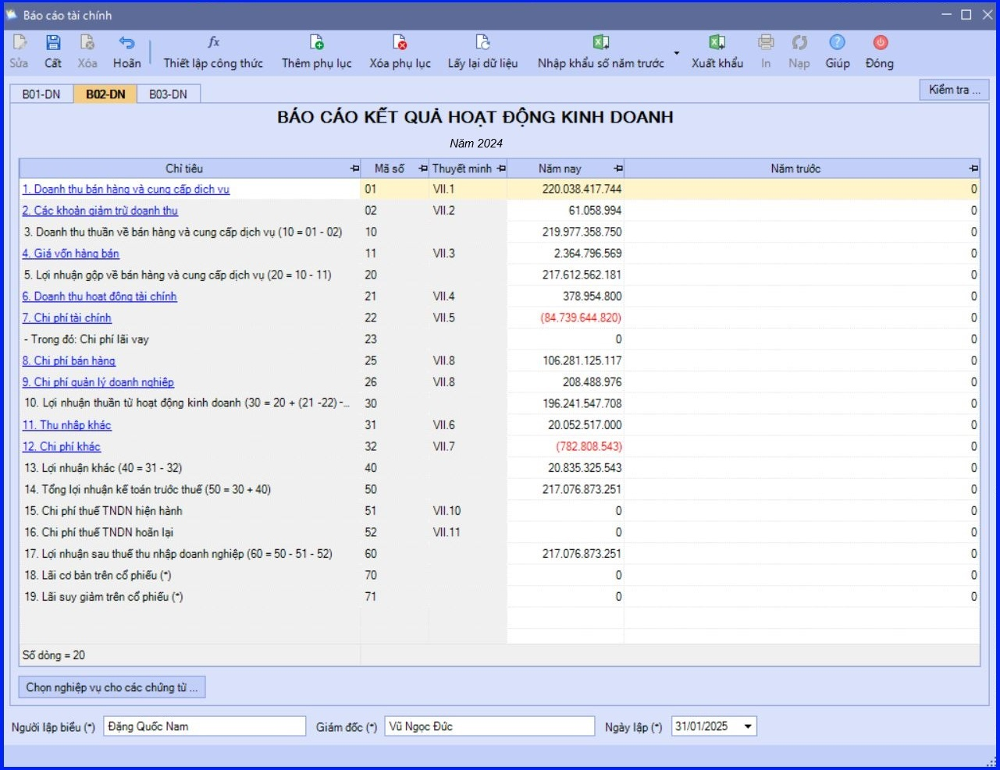
Lưu ý:
+ Trường hợp Báo cáo kết quả hoạt động kinh doanh phát sinh các chứng từ điều chỉnh chưa xác định được nghiệp vụ, kế toán sẽ sử dụng chức năng "Chọn nghiệp vụ" cho các chứng từ trên tab "B02-DN" để xác định lại nghiệp vụ cho các chứng từ đó.
+ Có thể kiểm tra được cách lấy số liệu của từng chỉ tiêu bằng cách ấn vào chỉ tiêu muốn kiểm tra.
- Tab B03-DN/B03-DN-GT là Báo cáo lưu chuyển tiền tệ (PP trực tiếp)/Báo cáo lưu chuyển tiền tệ (PP gián tiếp).
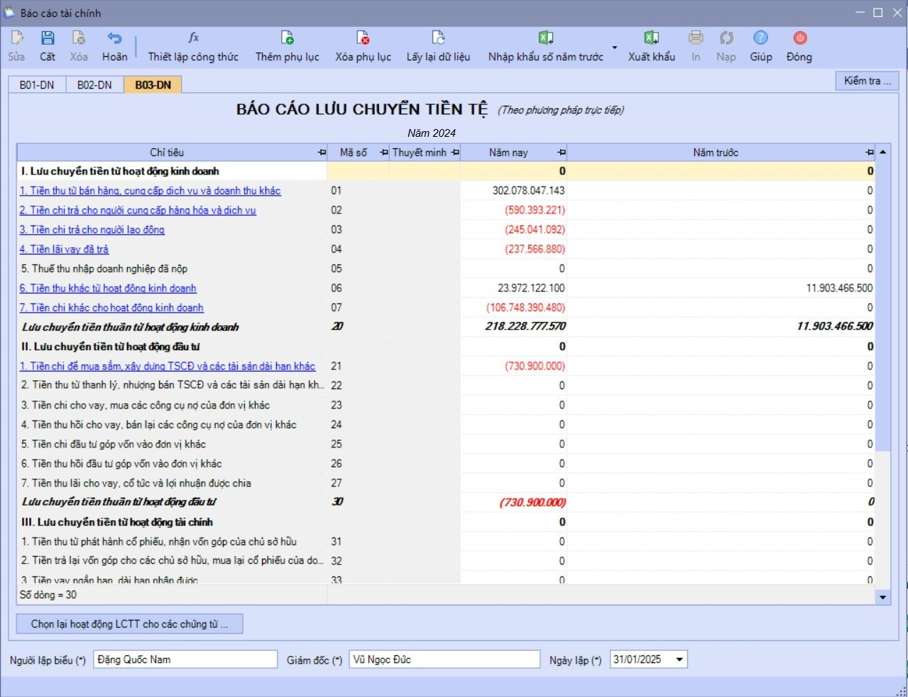
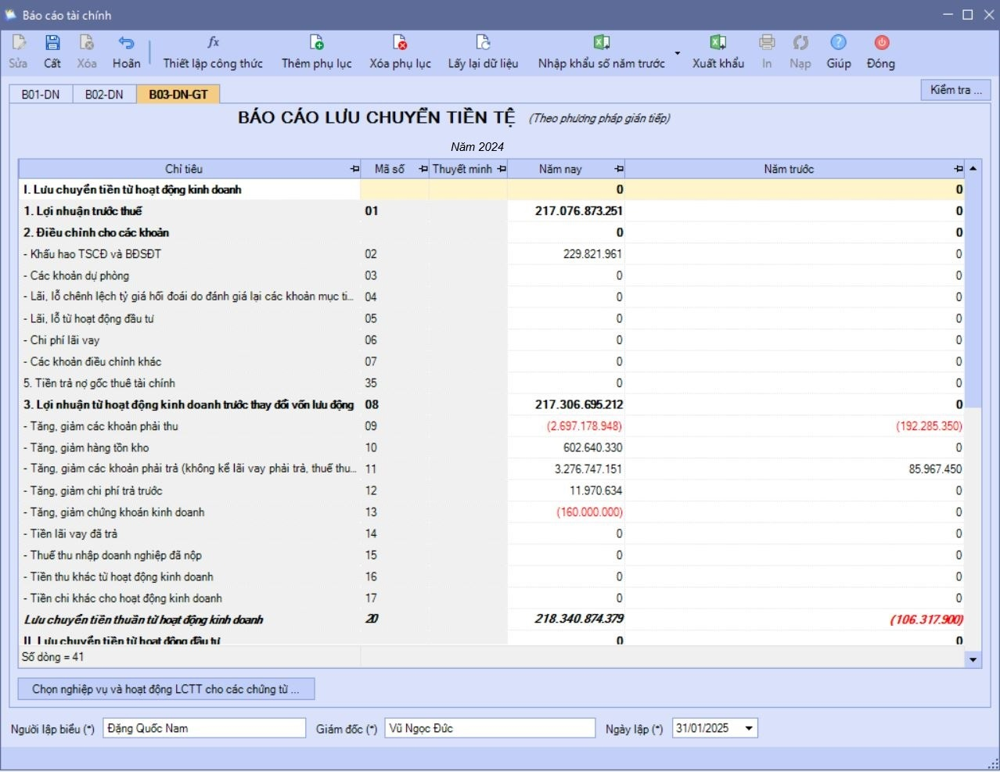
Lưu ý:
+ Để báo cáo lưu chuyển tiền tệ lấy lên số liệu chính xác, kế toán cần thực hiện Chọn lại hoạt động LCTT cho các chứng từ/Chọn nghiệp vụ và hoạt động LCTT cho các chứng từ.
+ Với Báo cáo lưu chuyển tiền tệ PP trực tiếp, có thể kiểm tra được cách lấy số liệu của từng chỉ tiêu bằng cách ấn vào chỉ tiêu muốn kiểm tra.
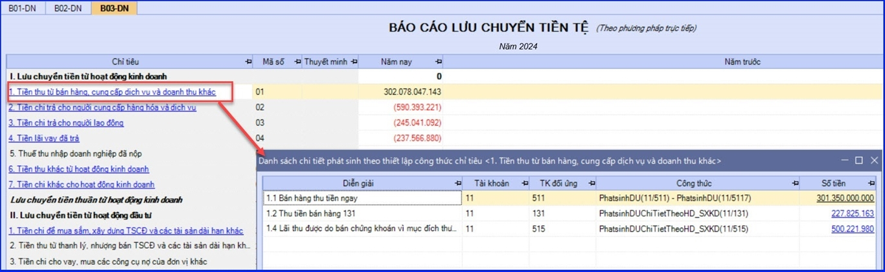
5. Có thể xem cách thiết lập công thức lấy dữ liệu lên Báo cáo tài chính và thiết lập lại các công thức này bằng cách chọn chức năng "Thiết lập công thức".
6. Nhập bổ sung dữ liệu cho các cột không được thiết lập công thức tính, sau đó ấn "Cất".
7. Chọn chức năng "In" trên thanh công cụ để in luôn báo cáo tài chính.
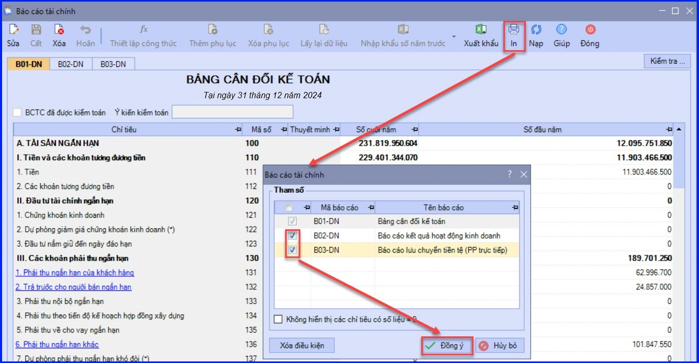
Lưu ý:
+ Đối với dữ liệu liên năm, cột "Quý trước/Năm trước" phần mềm sẽ tự động lấy dữ liệu. Đối với dữ liệu không phải liên năm, kế toán có thể nhập khẩu từ file excel, file xml hoặc tự nhập dữ liệu vào các cột này.
+ Trường hợp có phát sinh thay đổi chứng từ trong kỳ lập báo cáo tài chính, kế toán có thể sử dụng chức năng "Lấy lại dữ liệu" trên thanh công cụ để cập nhật lại dữ liệu mới nhất lên báo cáo tài chính.
+ Trường hợp muốn xoá các phụ lục (B02-DN; B03-DN/B03-DN-GT) đã được lập kèm báo cáo tài chính => kế toán ấn chọn vào tab tương ứng => sau đó chọn chức năng "Xoá phụ lục" trên thanh công cụ.
+ Trường hợp muốn bổ sung thêm báo cáo tài chính cần in, kế toán nhấn chọn chức năng "Thêm phụ lục" trên thanh công cụ.
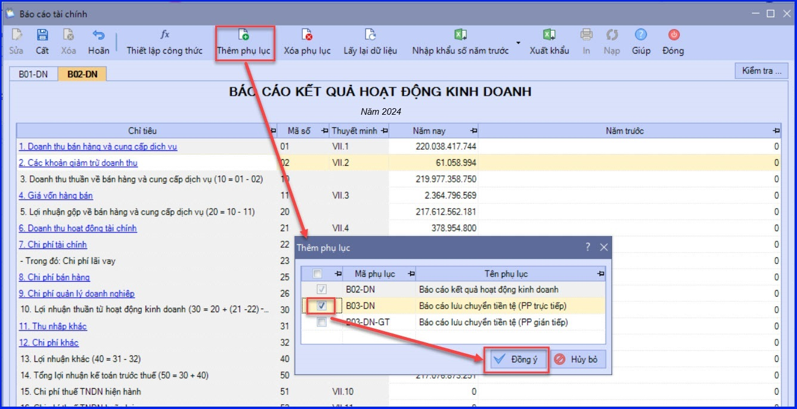
+ Đối với công ty đa chi nhánh, nếu lập báo cáo tài chính ở cấp Tổng công ty, thì phần mềm sẽ tổng hợp số liệu của riêng Tổng công ty và của tất cả các chi nhánh hạch toán phụ thuộc.
B - Lập thuyết minh báo cáo tài chính – theo Thông tư 200
- Vào phân hệ "Tổng hợp" => chọn tab "Lập BCTC" => chọn chức năng "Thêm\Thuyết minh báo cáo tài chính".
- Chọn kỳ báo cáo, sau đó ấn "Đồng ý".
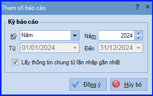
- Hệ thống sẽ tự động lấy dữ liệu lên các báo cáo theo công thức đã được thiết lập. Để kiểm tra lại công thức lấy cho từng báo cáo, kế toán chọn chức năng "Thiết lập công thức" trên thanh công cụ.
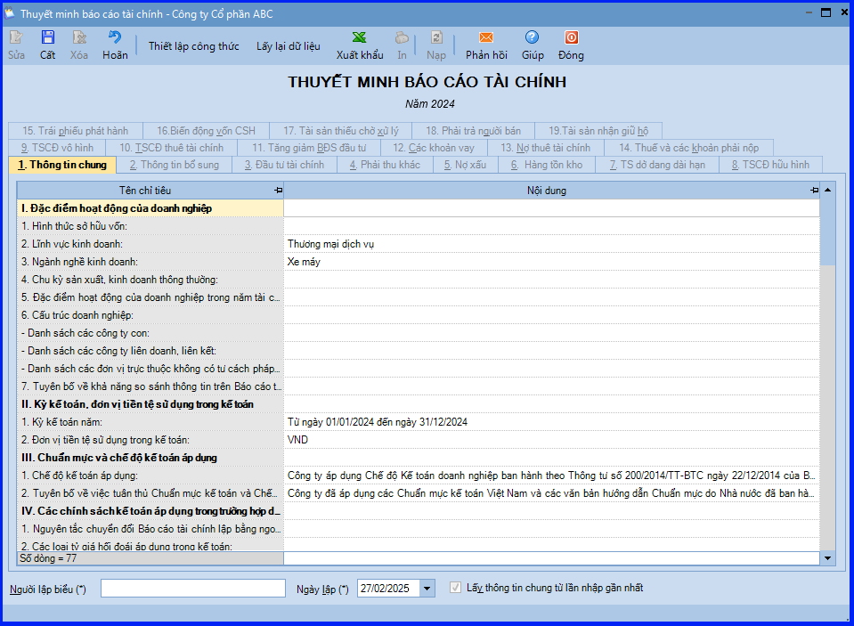
- Ấn "Cất" để lưu báo cáo đã lập.
KẾ TOÁN DIỆU TÂM chúc các bạn làm tốt!
=============================
Nếu bạn muốn thành thạo các kỹ năng làm kế toán trên phần mềm Misa
Thì bạn có thể tham khảo "Khóa Học Thực Hành Kế Toán Trên Phần Mềm Misa" tại Công ty đào tạo Kế Toán Diệu Tâm
Trong khóa học này, bạn sẽ được dạy cách lên sổ sách, lập báo cáo tài chính trên phần mềm Misa
Chi tiết về chương trình đào tạo bạn xem tại đây nhé: Khóa học thực hành kế toán trên Misa
=============================
=============================
Nếu bạn muốn thành thạo các kỹ năng làm kế toán trên phần mềm Misa
Thì bạn có thể tham khảo "Khóa Học Thực Hành Kế Toán Trên Phần Mềm Misa" tại Công ty đào tạo Kế Toán Diệu Tâm
Trong khóa học này, bạn sẽ được dạy cách lên sổ sách, lập báo cáo tài chính trên phần mềm Misa
Chi tiết về chương trình đào tạo bạn xem tại đây nhé: Khóa học thực hành kế toán trên Misa
=============================